Trapping Rainwater
Problem Statement: Given an array of non-negative integers representation elevation of ground. Your task is to find the water that can be trapped after rain .
Examples
Input : height = [0,1,0,2,1,0,1,3,2,1,2,1] Output : 6 Explanation : Water is trapped in the dips between bars. The total trapped water units add up to 6 (1+1+2+1+1).
Input : height = [4,2,0,3,2,5] Output : 9 Explanation : The elevation map traps 9 units of water in total, as water fills the spaces between higher bars on both sides.
Disclaimer: Don’t jump directly to the solution, try it out yourself first.
Brute Force Approach
Algorithm
- For each bar in the array, find the maximum height bar on its left.
- Find the maximum height bar on its right.
- Calculate the trapped water on the current bar as min(maxLeft, maxRight) - current height.
- Sum all trapped water from each bar to get the total amount of trapped water.
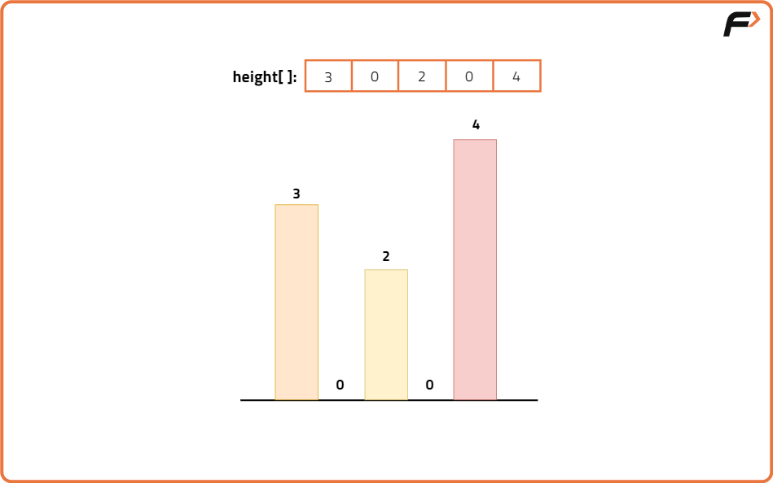
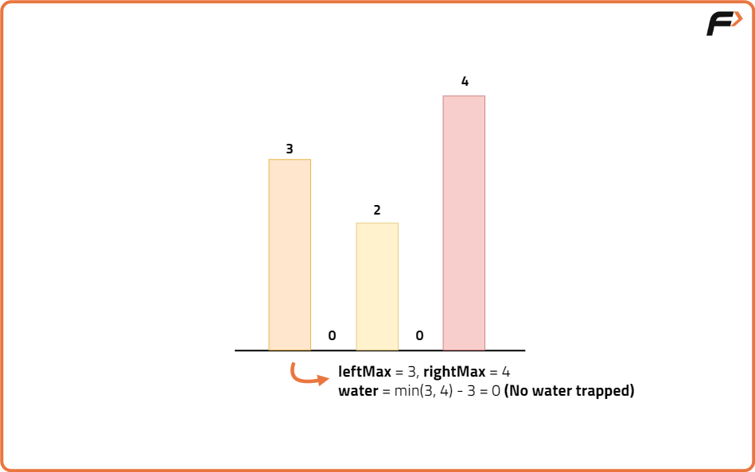
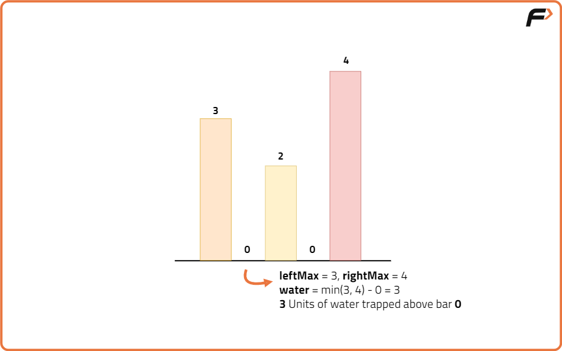
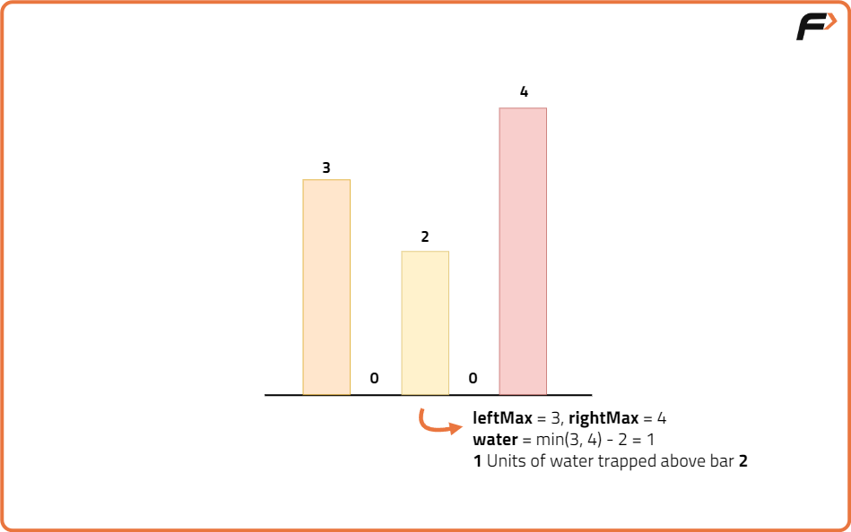
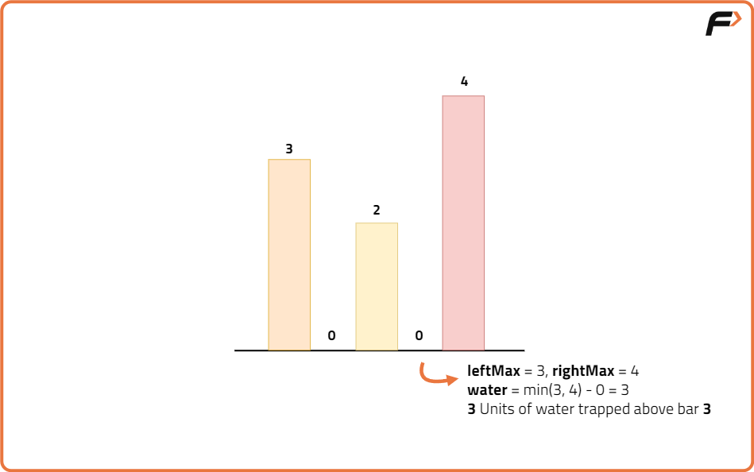
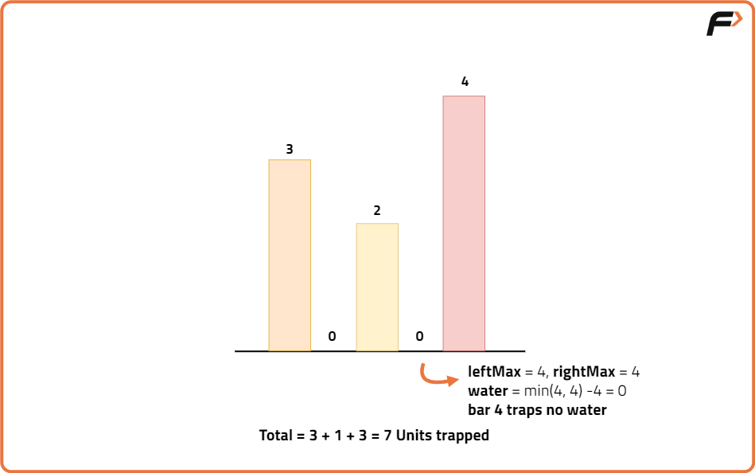
Code
#include <bits/stdc++.h>
using namespace std;
class Solution {
public:
// Function to calculate trapped rainwater using brute force approach
int trap(vector<int>& height) {
int n = height.size();
// Variable to store total trapped water
int totalWater = 0;
// Iterate over each bar in the elevation map
for (int i = 0; i < n; i++) {
// Initialize max heights to the left and right of current bar
int maxLeft = 0;
int maxRight = 0;
// Find maximum height to the left of current bar
for (int j = 0; j <= i; j++) {
if (height[j] > maxLeft) {
maxLeft = height[j];
}
}
// Find maximum height to the right of current bar
for (int j = i; j < n; j++) {
if (height[j] > maxRight) {
maxRight = height[j];
}
}
// Water trapped on current bar is min of maxLeft and maxRight minus current height
totalWater += min(maxLeft, maxRight) - height[i];
}
// Return total trapped water
return totalWater;
}
};
// Driver code
int main() {
// Input elevation map
vector<int> height = {0,1,0,2,1,0,1,3,2,1,2,1};
// Create Solution object
Solution sol;
// Calculate trapped water
int result = sol.trap(height);
// Print the result
cout << "Trapped Rainwater: " << result << endl;
return 0;
}
Complexity Analysis
Time Complexity: O(n²) because for each bar, we scan all bars to its left and right to find the maximum height, resulting in nested loops.
Space Complexity: O(1) as no additional data structures are used proportional to input size, only variables to track max heights and total water.
Optimal Approach
Algorithm
- Initialize two pointers: one at the start (left) and one at the end (right) of the array.
- Initialize two variables to track the maximum height encountered so far from the left (maxLeft) and from the right (maxRight).
- Initialize a variable to store the total trapped water (totalWater).
- While the left pointer is less than or equal to the right pointer:
- If the height at the left pointer is less than or equal to the height at the right pointer:
- If the height at left is greater than or equal to maxLeft, update maxLeft.
- Else, add the difference between maxLeft and the current height at left to totalWater.
- Move the left pointer one step right.
- Otherwise (height at right is smaller):
- If the height at right is greater than or equal to maxRight, update maxRight.
- Else, add the difference between maxRight and the current height at right to totalWater.
- Move the right pointer one step left.
- Return totalWater as the total trapped rainwater.
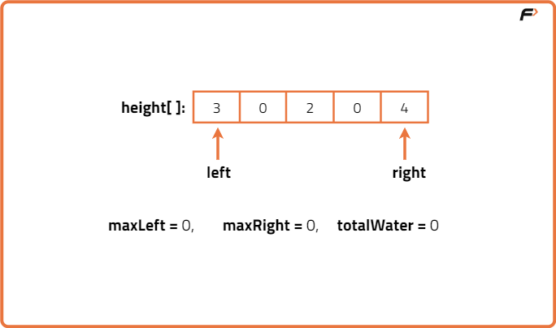
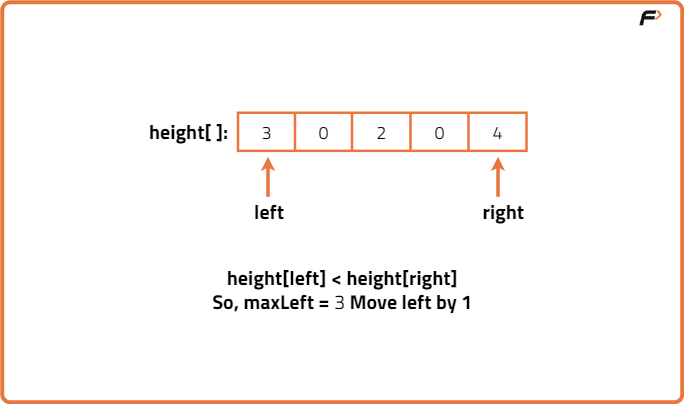
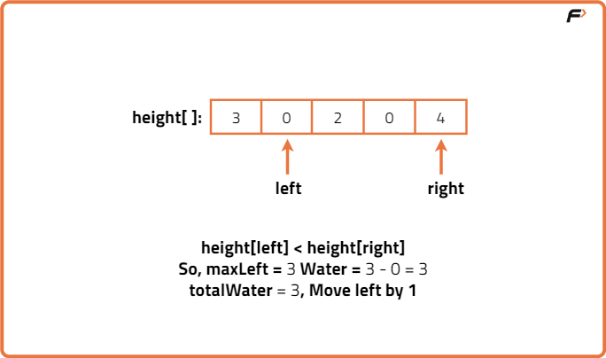
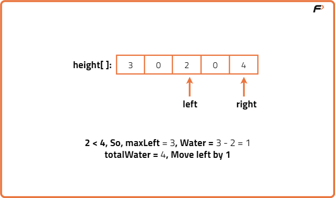
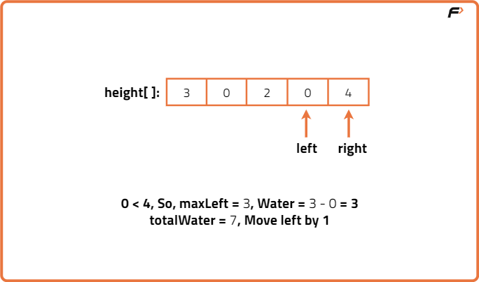
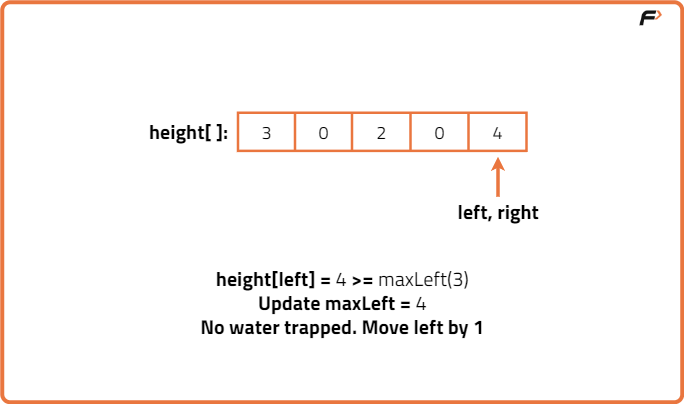
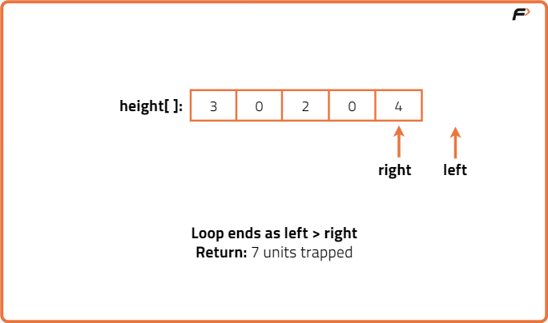
Code
#include <bits/stdc++.h>
using namespace std;
class Solution {
public:
// Function to calculate trapped rainwater using the optimal two-pointer approach
int trap(vector<int>& height) {
int n = height.size();
// Initialize two pointers at both ends of the array
int left = 0;
int right = n - 1;
// Variables to track the maximum height to the left and right
int maxLeft = 0;
int maxRight = 0;
// Variable to store total trapped water
int totalWater = 0;
// Iterate until left pointer meets right pointer
while (left <= right) {
// If left bar is smaller or equal to right bar
if (height[left] <= height[right]) {
// If current left bar is higher than maxLeft, update maxLeft
if (height[left] >= maxLeft) {
maxLeft = height[left];
} else {
// Water trapped on left is difference between maxLeft and current height
totalWater += maxLeft - height[left];
}
left++; // Move left pointer to the right
} else {
// If current right bar is higher than maxRight, update maxRight
if (height[right] >= maxRight) {
maxRight = height[right];
} else {
// Water trapped on right is difference between maxRight and current height
totalWater += maxRight - height[right];
}
right--; // Move right pointer to the left
}
}
// Return total trapped water
return totalWater;
}
};
// Driver code
int main() {
// Input elevation map
vector<int> height = {0,1,0,2,1,0,1,3,2,1,2,1};
// Create Solution object
Solution sol;
// Calculate trapped water
int result = sol.trap(height);
// Print the result
cout << "Trapped Rainwater: " << result << endl;
return 0;
}
Complexity Analysis
Time Complexity: O(n) because the two pointers traverse the array only once, each pointer moving inward and covering the entire array in total linear time.
Space Complexity: O(1) as only constant extra space is used for pointers and variables, regardless of input size.